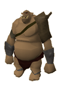
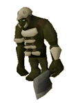
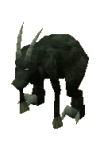

The God Wars Dungeon - Introduction (Members)
Warning | Introduction | Location | Points of Interest
Quests | Soldiers in the Battle | Miscellaneous
Quests | Soldiers in the Battle | Miscellaneous
Warning
The God Wars Dungeon is without question the most dangerous place in RuneScape. Within the dungeon itself you will find a multicombat area filled with creatures that have spent the whole of their natural lives fighting. If you have never been to the God Wars Dungeon before, take only items you are willing to lose. This is not a warning that should be taken lightly...
You must have started Troll Stronghold to gain access to the God Wars Dungeon.
Introduction

In recent times, though, the sheer number of adventurers wandering the land have had a remarkable environmental effect - something akin to global warming from the massive numbers of logs burnt* has thawed a place best forgotten. Now, freed from their icy stasis, the warriors that went to fight in one of the last great battles of the god wars have returned to life, without the slightest inkling that their war ended so long ago.
* Of course, some volcanic activity was also involved, but that's not nearly as exciting.
Location

The path to this temple is not easy, though, as the only path into the temple's valley is blocked by massive stones. To move the boulders from the path you must have a Strength level of 60. Alternatively, a small niche in a rockslide can be carefully navigated if you have an Agility level of 60.
You may leave the area by the same path, or by descending the cliffs that lead down to the Wilderness in the east.
Note that this is a particularly cold region in RuneScape, where the chill saps your strength and numbs your mind. The longer you stay in the temple grounds, the lower all of your statistics will fall. The cold effect is not present in the God Wars Dungeon itself.
Points of Interest

The most striking feature of the God Wars Dungeon is the battle itself. As you attempt to move about the main area safely, you will see dozens of warriors still acting out the roles they were given all those centuries ago. In general, Armadyl, Bandos and Saradomin had their legions there to fight Zamorak's forces, but the god wars were named appropriately, for the gods' mistrust inevitably led to fighting between these supposed 'allies'.
The main central area of the God Wars Dungeon is where most of the fighting happens, while each of the deities involved has an established stronghold around the edge. If you wish to help your chosen god to defeat his enemies, you might like to try penetrating those bases and slaying your foes' generals.
You'll notice a counter in the top right of your screen detailing how many followers of each god you have killed. In order to gain access to the generals' chambers, you must have killed at least forty of their followers.
Click a deity below to find out more about the strongholds.
Personalities
|
When the Temple Knights discovered rumours of the ruined temple, they immediately feared the return of some ancient evil and sent a contingent of their finest warriors to investigate. The knight that lies dying amid the crumbling masonry is all that remains of that doomed expedition...
|
Quests
There are no quests to start in the God Wars Dungeon, only a constant struggle for survival!
Soldiers in the Battle

During the god wars, even the lowliest of soldiers had their powers boosted by their god, and imps are no exception. These tiny manifestations of evil were normally used to swarm over their enemies or as expert thieves, but now they are so few that they are easily the weakest of the foes you might encounter.
|

Goblins were one of the most numerous races during the god wars and made up the bulk of a number of armies. They are fairly harmless by the dungeon's standards, although you'll be too busy fighting off everything else to notice.
|

The icefiends may once have been waterfiends, but their long imprisonment in the cold turned them to ice. They are now like shards of evil water raised to fight by Zamorak's sorceries.
|

Hobgoblins are like a cross between a goblin and an ork, but they lack a goblin's tenacity and an ork's brute strength. They make up for this by being almost as numerous as the goblins but far stronger.
|

Pyrefiends are creatures of pure flame and hate, and though small they are remarkably dangerous. You will need a Slayer level of 30 to kill a pyrefiend.
|

Ogres are one of Bandos's favourite creations, being utterly devoted to him and dull-witted enough to follow any order. The ogres in the God Wars Dungeon are massive brutes with little concept of safety.
|

Even during the god wars there were jungles to breed jogres in, and Bandos took advantage of their natural aggression to supplement his armies. The jogres are dangerous foes and are, if anything, more belligerent than orks.
|

The aviantese were Armadyl's most precious children, and it is told that when they were destroyed he wept and abandoned RuneScape. Of course, not all of them were slain - some were merely frozen - and they continue to fight in his name. You can only attack an aviansie with Ranged or Magic attacks.
|

The vampyres have been allies of Zamorak from the beginning of the god wars, and even the primitive versions present in the God Wars Dungeon are potent fighters with a remarkable bloodlust. Be glad that there are no members of the Vyrewatch down there!
|

Bloodvelds are bloated creatures with a long, flexible tongue with which they drain their prey of blood. They are tough creatures, and you will need a Slayer level of 50 to kill them.
|

In their true forms, werewolves are incredibly powerful creatures possessed of a single-minded determination to kill. In the dungeon this lust is sated endlessly.
|

The most reliable warriors in Bandos's forces are the orks. They are massive beasts with a bloody-minded loyalty to their god of war: the ideal soldier in a battle that might never end.
|

During the time of the god wars, priests could not afford to be peaceful and weak, unlike their softer descendents in Lumbridge and Varrock. These devout men went to battle with the certainty that Saradomin would grant them the strength to prevail.
|
Even after death, the greatest soldiers in the gods' armies continue to serve. Spiritual mages are potent sorcerers and are rarely alone.
|

The gods' forces are largely composed of spiritual fighters - those who have given their lives in the struggle, and continue to do so these thousands of years later. The rangers in these armies are excellent marksmen and should not be underestimated.
|

The spiritual warriors are the strongest of the many spirits that fight beneath the ice. Their blades are tempered with the belief they attribute to their cause.
|

These vicious beasts stalk their prey across the world without pausing for rest. They are the ultimate hunter, and Zamorak's armies are often preceded by the baying of these demonic hounds.
|

The icy paths of the mountains above the God Wars Dungeon are owned by the ice wolves - even the ice trolls tend to avoid them. They are vicious beasts driven by hunger.
|
|
| Ice wolves can be found around the temple ruins above the God Wars Dungeon. |
|

Goraks come from a plane entirely separate from that of RuneScape, but the boundary between the two worlds is weak at the best of times. During the god wars, many of them made their way into RuneScape to serve under any god that would show them battle. They are especially dangerous, as no prayers will stop their attacks, and they will drain your skill levels with astonishing speed.
|
Miscellaneous
- There is a catch to entering each of the gods' areas. To enter Saradomin's Encampment you will need two lengths of rope and level 70 Agility. To enter Bandos's Stronghold you will need a hammer and level 70 Strength. To enter Armadyl's Eyrie you will need a crossbow and a mithril grapple, as well as level 70 Ranged.
- When you enter Zamorak's Fortress you will discover that your Prayer is immediately drained and that no light source can penetrate the unnatural shadows. You must also have at least 70 Hitpoints remaining to cross the river.
 More articles in God Wars Dungeon (Members)
More articles in God Wars Dungeon (Members)- The God Wars Dungeon - Introduction (Members)
- Armadyl's Eyrie (Members)
- Bandos's Stronghold (Members)
- Saradomin's Encampment (Members)
- Zamorak's Fortress (Members)